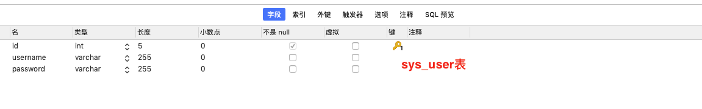
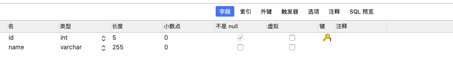
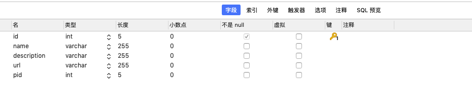
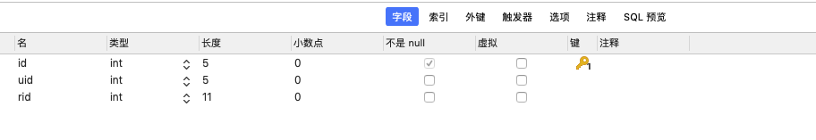
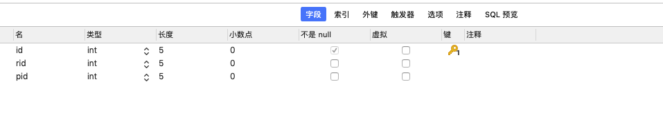

springboot-security集成验证、授权、记住密码、用户切换、session并发管理等
1. pom.xml中引入依赖
<dependency>
<groupId>org.springframework.boot</groupId>
<artifactId>spring-boot-starter-data-jpa</artifactId>
</dependency>
<dependency>
<groupId>org.springframework.boot</groupId>
<artifactId>spring-boot-starter-security</artifactId>
</dependency>
<!--rememberme功能token存入数据库-->
<dependency>
<groupId>org.springframework.boot</groupId>
<artifactId>spring-boot-starter-jdbc</artifactId>
</dependency>
<dependency>
<groupId>org.springframework.boot</groupId>
<artifactId>spring-boot-starter-thymeleaf</artifactId>
</dependency>
<dependency>
<groupId>org.springframework.boot</groupId>
<artifactId>spring-boot-starter-web</artifactId>
</dependency>
<dependency>
<groupId>mysql</groupId>
<artifactId>mysql-connector-java</artifactId>
<scope>runtime</scope>
</dependency>
<dependency>
<groupId>org.projectlombok</groupId>
<artifactId>lombok</artifactId>
<optional>true</optional>
</dependency>
<dependency>
<groupId>org.springframework.boot</groupId>
<artifactId>spring-boot-starter-test</artifactId>
<scope>test</scope>
</dependency>
<dependency>
<groupId>org.springframework.security</groupId>
<artifactId>spring-security-test</artifactId>
<scope>test</scope>
</dependency>
<!-- 连接池 -->
<dependency>
<groupId>com.alibaba</groupId>
<artifactId>druid</artifactId>
<version>1.1.0</version>
</dependency>
<!-- mybatis -->
<dependency>
<groupId>org.mybatis.spring.boot</groupId>
<artifactId>mybatis-spring-boot-starter</artifactId>
<version>2.0.1</version>
</dependency>
<!-- 通用 mapper -->
<dependency>
<groupId>tk.mybatis</groupId>
<artifactId>mapper-spring-boot-starter</artifactId>
<version>1.1.7</version>
</dependency>
<!--mapper-->
<dependency>
<groupId>tk.mybatis</groupId>
<artifactId>mapper</artifactId>
<version>4.1.4</version>
</dependency>
2. 配置application.properties
spring.datasource.driver-class-name=com.mysql.cj.jdbc.Driver
spring.datasource.url=jdbc:mysql://localhost:3306/springboot-security
spring.datasource.username=root
spring.datasource.password=xxx
spring.datasource.type=com.alibaba.druid.pool.DruidDataSource
mybatis.type-aliases-package=com.example.demo.entity
mybatis.mapper-locations=classpath:mappers/*.xml
mybatis.configuration.map-underscore-to-camel-case=true
#thymeleaf
spring.thymeleaf.cache=false
spring.thymeleaf.prefix=classpath:/templates/
spring.thymeleaf.check-template-location=true
spring.thymeleaf.template-resolver-order=1
spring.thymeleaf.suffix=.html
spring.thymeleaf.encoding=UTF-8
spring.thymeleaf.servlet.content-type=text/html
spring.thymeleaf.mode=HTML5
#配置SpringSecurity登录账号和密码
#spring.security.user.name=czy
#spring.security.user.password=xxx
#关闭springboot-security默认登录
#security.basic.enabled=false
#配置springmvc资源位置 默认/**
#spring.mvc.static-path-pattern=/images/**
#spring.resources.static-locations=xxx
3. 新建五张表：分别为用户表，角色表，权限表，用户角色表，角色权限表如下:
    4. 使用mybatis-generator+通用mapper快速配置好demo中的pojo/mapper/dao层, 在application中扫描dao层，注意imapper不能和业务dao在同一个包下。
5. 配置好全局响应，全局异常捕捉，异常枚举
//捕捉异常
@ControllerAdvice
public class CustomExceptionHandler {
//自定义异常处理
@ResponseBody
@ExceptionHandler(CustomException.class)
public BaseModel errorHandleJson(CustomException exp){
return BaseModel.fail( exp.getCode(), exp.getMessage(), null);
}
@ResponseBody
@ExceptionHandler(Exception.class)
public BaseModel errorHandler(Exception exp){
return BaseModel.fail(-1, exp.getMessage(), null);
}
}
//自定义异常类
public class CustomException extends RuntimeException {
private Integer code;
public CustomException(HttpStatusEnum httpStatusEnum){
//显式调用父类构造方法
super(httpStatusEnum.getMessage());
code = httpStatusEnum.getCode();
}
public Integer getCode() {
return code;
}
}
//异常枚举类
public enum HttpStatusEnum {
TokenIsNull("token不能为空", 101),
TokenIsNotValid("token验证失败", 102),
TokenRequiredRelogin("你的账号在其他地方登录", 103),
UserIsNotExist("用户不存在", 104),
UsernamePasswordNotRight("用户名或者密码错误", 105),
UsernameDisabled("用户名已被禁用", 106),
UsernameLocked("用户名已被锁定", 107),
UsernameExpired("用户名过期", 108),
CredenCtialExpired("证书过期", 109);
public String message;
public Integer code;
HttpStatusEnum(String message, Integer code){
this.message = message;
this.code = code;
}
public String getMessage() {
return message;
}
public void setMessage(String message) {
this.message = message;
}
public Integer getCode() {
return code;
}
public void setCode(Integer code) {
this.code = code;
}
}
6. 配置资源访问, static下面的资源默认可以访问到, 也可以在application.properties 中通过spring.mvc.static-path-pattern和spring.resources.static-locations自定义资源默认访问位置。
package com.example.demo.config;
import org.springframework.context.annotation.Configuration;
import org.springframework.web.servlet.config.annotation.ResourceHandlerRegistry;
import org.springframework.web.servlet.config.annotation.WebMvcConfigurerAdapter;
@Configuration
public class webConfig extends WebMvcConfigurerAdapter {
@Override
public void addResourceHandlers(ResourceHandlerRegistry registry) {
//加载指定的资源
registry.addResourceHandler("/images/**")
.addResourceLocations("classpath:/images/");
super.addResourceHandlers(registry);
}
}
7. UserService层重写UserDetailsService
//继承于UserDetailsService
public interface UserService extends UserDetailsService {
int addUser(SysUser user);
}
package com.example.demo.service.imp;
import com.example.demo.dao.SysUserMapper;
import com.example.demo.entity.SysPermission;
import com.example.demo.entity.SysUser;
import com.example.demo.service.UserService;
import org.springframework.beans.factory.annotation.Autowired;
import org.springframework.security.core.GrantedAuthority;
import org.springframework.security.core.authority.SimpleGrantedAuthority;
import org.springframework.security.core.userdetails.UserDetails;
import org.springframework.security.core.userdetails.UsernameNotFoundException;
import org.springframework.stereotype.Service;
import tk.mybatis.mapper.entity.Example;
import java.util.ArrayList;
import java.util.List;
@Service("userService")
public class UserServiceImp implements UserService {
@Autowired
@SuppressWarnings("all")
private SysUserMapper sysUserMapper;
//返回 user和user拥有的权限功能
@Override
public UserDetails loadUserByUsername(String username) throws UsernameNotFoundException {
Example example = new Example(SysUser.class);
Example.Criteria criteria = example.createCriteria();
criteria.andEqualTo("username", username);
SysUser user = (SysUser)this.sysUserMapper.selectOneByExample(example);
if (user == null){
throw new UsernameNotFoundException("用户不存在");
}else {
//根据id查询指定用户的所有权限
List<SysPermission> perms = this.sysUserMapper.findPermissionsByUserId(user.getId());
List<GrantedAuthority> grantedAuthorities = new ArrayList<>();
perms.forEach(perm ->{
GrantedAuthority grantedAuthority = new SimpleGrantedAuthority(perm.getName());
grantedAuthorities.add(grantedAuthority);
});
//AuthorityUtils.commaSeparatedStringToAuthorityList(user.getRole()) 字符串分割
return new org.springframework.security.core.userdetails.User(user.getUsername(), user.getPassword(),
grantedAuthorities);
}
}
@Override
public int addUser(SysUser user) {
return this.sysUserMapper.insert(user);
}
}
mapper中根据用户id获取用户的所有权限:
<select id="findPermissionsByUserId" parameterType="INTEGER" resultType="com.example.demo.entity.SysPermission">
select p.*
from `sys_user` u
left join `sys_user_role` ur on ur.uid=u.id
left join `sys_role` r on ur.rid=r.id
left join `sys_role_permission` rp on rp.rid=r.id
left join `sys_permission` p on p.id=rp.pid
where u.id=#{id}
</select>
8. 配置springboot-security拦截器:
package com.example.demo.config;
import com.example.demo.exception.CustomException;
import com.example.demo.exception.HttpStatusEnum;
import org.springframework.beans.factory.annotation.Autowired;
import org.springframework.security.access.SecurityMetadataSource;
import org.springframework.security.access.intercept.AbstractSecurityInterceptor;
import org.springframework.security.access.intercept.InterceptorStatusToken;
import org.springframework.security.authentication.*;
import org.springframework.security.core.AuthenticationException;
import org.springframework.security.core.userdetails.UsernameNotFoundException;
import org.springframework.security.web.FilterInvocation;
import org.springframework.security.web.WebAttributes;
import org.springframework.stereotype.Service;
import javax.servlet.*;
import javax.servlet.http.HttpServletRequest;
import java.io.IOException;
/**
* 继承AbstractSecurityInterceptor抽象类，权限管理Security真正的拦截器，
* 并绑定了MyAccessDecisionManager（处理权限认证）和MyInvocationSecurityMetadataSourceService
* （提供请求路径和权限名称元数据）
* */
@Service
public class MyFilterSecurityInterceptor extends AbstractSecurityInterceptor implements Filter {
//装配MyInvocationSecurityMetadataSourceService
@Autowired
private MyInvocationSecurityMetadataSourceService securityMetadataSource;
//装配MyAccessDecisionManager
@Autowired
public void setMyAccessDecisionManager(MyAccessDecisionManager accessDecisionManager) {
super.setAccessDecisionManager(accessDecisionManager);
}
@Override
public void init(FilterConfig filterConfig) {
}
@Override
public void doFilter(ServletRequest request, ServletResponse response, FilterChain chain)
throws IOException, ServletException {
HttpServletRequest httpServletRequest = (HttpServletRequest)request;
handleExceptions(httpServletRequest);
FilterInvocation filterInvocation = new FilterInvocation(request, response, chain);
invoke(filterInvocation);
}
public void invoke(FilterInvocation fi) throws IOException, ServletException{
//fi里面有一个被拦截的url
//里面调用MyInvocationSecurityMetadataSource的getAttributes(Object object)这个方法获取fi对应的所有权限
//再调用MyAccessDecisionManager的decide方法来校验用户的权限是否足够
InterceptorStatusToken token = super.beforeInvocation(fi);
try {
//执行下一个拦截器
fi.getChain().doFilter(fi.getRequest(), fi.getResponse());
}finally {
super.afterInvocation(token, null);
}
}
//捕捉异常
public void handleExceptions(HttpServletRequest request){
AuthenticationException authenticationException
= (AuthenticationException) request.getSession().
getAttribute(WebAttributes.AUTHENTICATION_EXCEPTION);
if (authenticationException instanceof UsernameNotFoundException
|| authenticationException instanceof BadCredentialsException){
throw new CustomException(HttpStatusEnum.UsernamePasswordNotRight);
}else if ((authenticationException instanceof DisabledException)){
throw new CustomException(HttpStatusEnum.UsernameDisabled);
}else if (authenticationException instanceof LockedException){
throw new CustomException(HttpStatusEnum.UsernameLocked);
}else if (authenticationException instanceof AccountExpiredException){
throw new CustomException(HttpStatusEnum.UsernameExpired);
}else if (authenticationException instanceof CredentialsExpiredException){
throw new CustomException(HttpStatusEnum.CredenCtialExpired);
}
}
@Override
public void destroy() {
}
@Override
public Class getSecureObjectClass() {
return FilterInvocation.class;
}
@Override
public SecurityMetadataSource obtainSecurityMetadataSource() {
return this.securityMetadataSource;
}
}
9. 实现了FilterInvocationSecurityMetadataSource接口, 判断拦截的request是否和权限表中的 url匹配， 如果匹配则返回request对应的ConfigAttribute集合， 不返回就返回null，为空不会调用decide方法。
package com.example.demo.config;
import com.example.demo.dao.SysPermissionMapper;
import com.example.demo.dao.SysUserMapper;
import com.example.demo.entity.SysPermission;
import org.springframework.beans.factory.annotation.Autowired;
import org.springframework.security.access.ConfigAttribute;
import org.springframework.security.access.SecurityConfig;
import org.springframework.security.web.FilterInvocation;
import org.springframework.security.web.access.intercept.FilterInvocationSecurityMetadataSource;
import org.springframework.security.web.util.matcher.AntPathRequestMatcher;
import org.springframework.stereotype.Service;
import javax.servlet.http.HttpServletRequest;
import java.util.*;
/**
* 实现了FilterInvocationSecurityMetadataSource接口，类似Holder主要实现加载缓存权限功能路径和名称，
* 以及提供从请求路径查找权限名称，供后续权限决策管理器去判定使用。
* */
@Service
public class MyInvocationSecurityMetadataSourceService
implements FilterInvocationSecurityMetadataSource {
@Autowired
@SuppressWarnings("all")
private SysUserMapper sysUserMapper;
@Autowired
@SuppressWarnings("all")
private SysPermissionMapper sysPermissionMapper;
//缓存
private HashMap<String, Collection<ConfigAttribute>> map = null;
//加载权限表中的所有权限
public void loadPerms(){
map = new HashMap<>();
Collection<ConfigAttribute> attributes;
ConfigAttribute configAttribute;
List<SysPermission> perms = this.sysPermissionMapper.selectAll();
for (SysPermission perm : perms) {
attributes = new ArrayList<>();
// 此处只添加了用户的名字，其实还可以添加更多权限的信息，例如请求方法到ConfigAttribute的集合中去。
// 此处添加的信息将会作为MyAccessDecisionManager类的decide的第三个参数。
configAttribute = new SecurityConfig(perm.getName());
attributes.add(configAttribute);
// 用权限的getUrl() 作为map的key，用ConfigAttribute的集合作为 value
map.put(perm.getUrl(), attributes);
}
}
// 此方法是为了判定请求的url是否在权限表中，
// 如果在权限表中，则返回给 decide 方法，调用decide方法,用来判定用户是否有此权限。如果不在权限表中则放行。
@Override
public Collection<ConfigAttribute> getAttributes(Object object) throws IllegalArgumentException {
if (map == null){
loadPerms();
}
//object 中包含用户请求的request 信息
HttpServletRequest request = ((FilterInvocation)object).getHttpRequest();
AntPathRequestMatcher matcher;
String resUrl;
for (Iterator<String> iterator = map.keySet().iterator(); iterator.hasNext(); ){
resUrl = iterator.next();
matcher = new AntPathRequestMatcher(resUrl);
if (matcher.matches(request)){
return map.get(resUrl);
}
}
return null;
}
@Override
public Collection<ConfigAttribute> getAllConfigAttributes() {
return null;
}
@Override
public boolean supports(Class<?> clazz) {
return true;
}
}
10. 实现AccessDecisionManager接口，主要判定用户是否拥有权限的决策方法，有权限放行，无权限拒绝访问。
package com.example.demo.config;
import org.springframework.security.access.AccessDecisionManager;
import org.springframework.security.access.AccessDeniedException;
import org.springframework.security.access.ConfigAttribute;
import org.springframework.security.authentication.InsufficientAuthenticationException;
import org.springframework.security.core.Authentication;
import org.springframework.security.core.GrantedAuthority;
import org.springframework.stereotype.Service;
import java.util.Collection;
import java.util.Iterator;
/**
* 实现了AccessDecisionManager接口，主要判定用户是否拥有权限的决策方法，有权限放行，无权限拒绝访问。
* */
@Service
public class MyAccessDecisionManager implements AccessDecisionManager {
// decide 方法是判定是否拥有权限的决策方法，
// authentication 是UserServiceImp中循环添加到 GrantedAuthority 对象中的权限信息集合.
// object 包含客户端发起的请求的requset信息，
// 可转换为 HttpServletRequest request = ((FilterInvocation) object).getHttpRequest();
// configAttributes 为MyInvocationSecurityMetadataSource的getAttributes(Object object)这个方法返回的结果，
// 此方法是为了判定用户请求的url 是否在权限表中，如果在权限表中，则返回给 decide 方法，用来判定用户是否有此权限。
// 如果不在权限表中则放行,不会执行这个方法
@Override
public void decide(Authentication authentication,
Object object,
Collection<ConfigAttribute> configAttributes)
throws AccessDeniedException, InsufficientAuthenticationException {
if (null == configAttributes || configAttributes.size() <= 0){
return;
}
ConfigAttribute configAttribute;
String needRole;
for (Iterator<ConfigAttribute> iter = configAttributes.iterator(); ((Iterator) iter).hasNext();){
configAttribute = iter.next();
needRole = configAttribute.getAttribute();
//authentication 为 UserServiceImp 中循环添加到 GrantedAuthority 对象中的权限信息集合
for (GrantedAuthority grantedAuthority : authentication.getAuthorities()) {
if (needRole.trim().equals(grantedAuthority.getAuthority())){
return;
}
}
}
throw new AccessDeniedException("没有权限");
}
@Override
public boolean supports(Class<?> clazz) {
return true;
}
@Override
public boolean supports(ConfigAttribute attribute) {
return true;
}
}
11. 前面配置好了用户的权限拦截， 接着就是重写WebSecurityConfigurerAdapter自定义拦截， 以及配置例如记住密码、用户切换、session并发控制等。
package com.example.demo.config;
import com.example.demo.service.UserService;
import com.example.demo.service.imp.UserServiceImp;
import org.springframework.beans.factory.annotation.Autowired;
import org.springframework.context.annotation.Bean;
import org.springframework.context.annotation.Configuration;
import org.springframework.security.config.annotation.authentication.builders.AuthenticationManagerBuilder;
import org.springframework.security.config.annotation.method.configuration.EnableGlobalMethodSecurity;
import org.springframework.security.config.annotation.web.builders.HttpSecurity;
import org.springframework.security.config.annotation.web.builders.WebSecurity;
import org.springframework.security.config.annotation.web.configuration.EnableWebSecurity;
import org.springframework.security.config.annotation.web.configuration.WebSecurityConfigurerAdapter;
import org.springframework.security.crypto.bcrypt.BCryptPasswordEncoder;
import org.springframework.security.web.access.intercept.FilterSecurityInterceptor;
import org.springframework.security.web.authentication.rememberme.JdbcTokenRepositoryImpl;
import org.springframework.security.web.authentication.rememberme.PersistentTokenRepository;
import org.springframework.security.web.authentication.switchuser.SwitchUserFilter;
import org.springframework.security.web.session.HttpSessionEventPublisher;
import javax.sql.DataSource;
/**
* 继承WebSecurityConfigurerAdapter抽象类，主要是最后配置Security，
* 配置之前定义的拦截器、提供用户基本权限信息、以及一些访问控制。
*
* springBoot-security中的过滤器:
* 其中UsernamePasswordAuthenticationFilter过滤器用于处理基于表单方式的登录认证，
* 而BasicAuthenticationFilter用于处理基于HTTP Basic方式的登录验证，
*/
@Configuration
@EnableWebSecurity //开启spring security功能
@EnableGlobalMethodSecurity(prePostEnabled = true) //启用方法级别的权限认证
public class securityAdapter extends WebSecurityConfigurerAdapter {
//记住密码
@Autowired
private DataSource dataSource;
//请数据库数据交给spring security管理
@Bean
public UserService userServiceSecurity() {
return new UserServiceImp();
}
//user Details Service验证 主要是对身份认证的设置
@Override
protected void configure(AuthenticationManagerBuilder auth) throws Exception {
auth.userDetailsService(userServiceSecurity()).passwordEncoder(passwordEncoder());
//指定内存认证 auth.inMemoryAuthentication() 指定用户名密码角色
// auth.inMemoryAuthentication().withUser("ethan")
// .password(new BCryptPasswordEncoder().encode("123456"))
// .roles("role1,role2,role3");
}
//报错，参考：https://blog.csdn.net/qq_43581949/article/details/90733834
// @Bean
// public PasswordEncoder passwordEncoder(){
//
// return new BCryptPasswordEncoder();
// }
@Bean
public BCryptPasswordEncoder passwordEncoder() {
//注册或者更改密码时的加密：
// BCryptPasswordEncoder bCryptPasswordEncoder = new BCryptPasswordEncoder();
//加密
// String encodedPassword = bCryptPasswordEncoder.encode("密码");
//保存到数据库
return new BCryptPasswordEncoder();
}
//对请求路径中带css,img,js的请求内容不进行权限拦截 主要是对某些 web 静态资源的设置
@Override
public void configure(WebSecurity web) throws Exception {
//设置需要忽略的验证url
web.ignoring().antMatchers("/css/**", "/img/**", "/js/**", "/images/**")
.antMatchers("/register")
.antMatchers("/addUser");
}
//复写这个方法来配置HttpSecurity
//httpsecurity使用参考:https://blog.csdn.net/dawangxiong123/article/details/68960041
@Override
protected void configure(HttpSecurity http) throws Exception {
//解决不允许显示在iframe的问题
http.headers().frameOptions().disable();
//指定角色为ROLE_USER 可以针对多个url配置多个限定角色
//http.authorizeRequests().antMatchers("/").hasRole("USER");
//任何用户都可以访问以下URI http.headers().disable():取消安全报文头
http.headers().and().authorizeRequests()
.antMatchers("/login", "/", "/signIn", "register", "/addUser", "/myerror")
.permitAll();
//其他的uri都需要验证
http.headers().and().authorizeRequests().anyRequest().authenticated();
//配置匿名访问
http.anonymous().authorities("ROLE_ANON");
//记住密码
//<input type="checkbox" name="remember-me" value="true">
//前端通过控制value的值 设置是否记住密码
http.authorizeRequests().and().rememberMe()
.tokenValiditySeconds(3600).tokenRepository(persistentTokenRepository());
//表单请求
// 默认
// loginPage: /login with an HTTP get
// usernameParameter: username
// passwordParameter: password
// failureUrl: /login?error
// loginProcessingUrl: /login with an HTTP post
http.formLogin().loginPage("/login").loginProcessingUrl("/signIn")
.usernameParameter("username").passwordParameter("password")
.defaultSuccessUrl("/index", true)
.failureUrl("/myerror").permitAll();
//http基本认证
// 例子： 此处[ROLE_ADMIN, ROLE_VIEW]不包含ROLE_HOME 所以访问basic端口不会返回内容
http.authorizeRequests().antMatchers("/**").hasRole("HOME").and().httpBasic();
//注销 .permitAll()需要带上 表示登录页面都可以访问 不然会报错 访问不了
http.formLogin().and().logout().deleteCookies("remove")
.logoutUrl("/logout").logoutSuccessUrl("/login")
.invalidateHttpSession(true).permitAll();
//session失效后跳转到/login
http.sessionManagement().invalidSessionUrl("/login");
//maximumSessions(1)当前只有一个用户登录 再登陆时会被第一个用户会被挤下去
//当使用SessionManagementConfigurer的maximumSessio(int)时不要忘记为应用配置HttpSessionEventPublisher，
// 这样能保证过期的session能够被清除。
http.sessionManagement().maximumSessions(1).expiredUrl("/login");
//配置每个请求都为https
//http.requiresChannel().anyRequest().requiresSecure();
//禁止跨域请求
http.csrf().disable();
//配置端口跳转：配置PortMapper 下面的例子将从8080跳转到https端口8443
// 并且将http端口80跳转到https443端口。
//http.portMapper().http(8080).mapsTo(8443)
//.http(80).mapsTo(443);
//切换用户 表示只有admin的管理员才有切换用户的权限
http.authorizeRequests().antMatchers("/").hasRole("ADMIN")
.and().addFilterAfter(switchUserFilter(), FilterSecurityInterceptor.class);
}
//token保存到数据库
@Bean
public PersistentTokenRepository persistentTokenRepository() {
JdbcTokenRepositoryImpl jdbcTokenRepository = new JdbcTokenRepositoryImpl();
//将 DataSource 设置到 PersistentTokenRepository
jdbcTokenRepository.setDataSource(dataSource);
// 第一次启动的时候自动建表（可以不用这句话，自己手动建表，源码中有语句的）
//jdbcTokenRepository.setCreateTableOnStartup(true);
return jdbcTokenRepository;
}
//SpringSecurity内置的session监听器
//SESSION 并发管理, 确保同账号只允许登录一次
@Bean
public HttpSessionEventPublisher httpSessionEventPublisher() {
return new HttpSessionEventPublisher();
}
//切换用户 参考链接：https://my.oschina.net/go4it/blog/1591720
@Bean
public SwitchUserFilter switchUserFilter() throws Exception{
SwitchUserFilter switchUserFilter = new SwitchUserFilter();
switchUserFilter.setUserDetailsService(userDetailsService());
//自定义SwitchUserFilter拦截的请求地址 默认是/login/impersonate?username=xxx
//自定义之后是/switchUser?username=xxx
switchUserFilter.setSwitchUserUrl("/switchUser");
//切换成功后想要退出时应该调用的url 默认是/logout/impersonate?username=xxx
//自定义之后是/exitUserExchange?username=xxx
switchUserFilter.setExitUserUrl("/exitUserExchange");
//切换后用户之后跳转到/userExchanged
switchUserFilter.setTargetUrl("/userExchanged");
return switchUserFilter;
}
}
12. 接下来在处理器中写接口进行测试:
package com.example.demo.controller;
import com.example.demo.entity.SysUser;
import com.example.demo.service.UserService;
import org.springframework.beans.factory.annotation.Autowired;
import org.springframework.beans.factory.annotation.Qualifier;
import org.springframework.security.access.prepost.PostAuthorize;
import org.springframework.security.access.prepost.PreAuthorize;
import org.springframework.security.core.context.SecurityContextHolder;
import org.springframework.security.crypto.bcrypt.BCryptPasswordEncoder;
import org.springframework.stereotype.Controller;
import org.springframework.web.bind.annotation.RequestMapping;
import org.springframework.web.bind.annotation.RequestMethod;
import org.springframework.web.bind.annotation.ResponseBody;
import javax.servlet.http.HttpServletRequest;
import javax.servlet.http.HttpServletResponse;
@Controller
public class HelloController {
@Autowired
@Qualifier("userService")
private UserService userService;
//添加测试用户
@ResponseBody
@RequestMapping(value = "/addUser", method = RequestMethod.POST)
public int addUser(String username, String password){
SysUser user = new SysUser();
user.setUsername(username);
//对密码进行加密
BCryptPasswordEncoder bCryptPasswordEncoder = new BCryptPasswordEncoder();
user.setPassword(bCryptPasswordEncoder.encode(password));
return userService.addUser(user);
}
@ResponseBody
@RequestMapping(value = "/signIn", method = RequestMethod.POST)
public int login(String username, String password, HttpServletRequest request,
HttpServletResponse response){
//springboot-security异常处理
//UsernameNotFoundException（用户不存在）
//DisabledException（用户已被禁用）
//BadCredentialsException（坏的凭据）
//LockedException（账户锁定）
//AccountExpiredException （账户过期）
//CredentialsExpiredException（证书过期）
return 0;
}
@RequestMapping(value = "/login")
public String login(){
return "login";
}
@RequestMapping(value = "/register")
public String register(){
return "register";
}
@RequestMapping(value = "/index")
public String index(){
return "index";
}
// /error 是系统默认的映射 不能重名 否则报错：Ambiguous mapping. Cannot map 'basicErrorController' method
@RequestMapping(value = "/myerror")
public String error(){
return "error";
}
@ResponseBody
@RequestMapping(value = "/admin")
public String admin(){
return "hello admin";
}
@ResponseBody
@RequestMapping(value = "/test")
public String test(){
return "hello test";
}
@ResponseBody
@RequestMapping(value = "/basic")
public String httpBasic(){
return "http basic";
}
//==================== 测试注解 =====================
//注解参考：https://www.jianshu.com/p/c159afb7bd4a
/**
* Spring Security默认是禁用注解的
* 1.prePostEnabled：支持Spring EL表达式，开启后可以使用
* @PreAuthorize：方法执行前的权限验证
* @PostAuthorize：方法执行后再进行权限验证
* @PreFilter：方法执行前对集合类型的参数或返回值进行过滤，移除使对应表达式的结果为false的元素
* @PostFilter：方法执行后对集合类型的参数或返回值进行过滤，移除使对应表达式的结果为false的元素
*
* 2.secureEnabled : 开启后可以使用
* @Secured：用来定义业务方法的安全性配置属性列表
*
* 3.jsr250Enabled ：支持JSR标准，开启后可以使用
* @RolesAllowed：对方法进行角色验证
* @DenyAll：允许所有角色调用
* @PermitAll：不允许允许角色调用
* */
@PreAuthorize("hasRole('ROLE_ADMIN')")
@ResponseBody
@RequestMapping(value = "/requireAdmin")
public String requireAdmin(){
return "require admin";
}
@PostAuthorize("hasRole('ROLE_HOME')")
@ResponseBody
@RequestMapping(value = "/requireHome")
public String requireHome(){
return "require home";
}
@PreAuthorize("hasRole('ROLE_VIEW')")
@ResponseBody
@RequestMapping(value = "/requireView")
public String requireView(){
return "require view";
}
@PreAuthorize(("hasRole('ROLE_TEST')"))
@ResponseBody
@RequestMapping(value = "/requireTest")
public String requireTest(){
return "require test";
}
//===================springboot-security 用户切换
//参考链接：https://my.oschina.net/go4it/blog/1591720
/**
* impersonate: 扮演
* SwitchUserFilter默认的切换账号的url为/login/impersonate，
* 默认注销切换账号的url为/logout/impersonate，默认的账号参数为username
*
* 测试：
* admin拥有权限：ROLE_ADMIN ROLE_VIEW ROLE_TEST ROLE_HOME
* czy拥有权限：ROLE_TEST
* 调用localhost:8080/login/impersonate/username=czy或者admin来切换用户
* 切换完成之后调用requireAdmin requireView requireHome requireTest即可测试效果
* */
@ResponseBody
@RequestMapping(value = "/userExchanged")
public Object userExchange(){
return SecurityContextHolder.getContext().getAuthentication();
}
//用户切换成功后想要退出时应该调用的url 默认是/logout/impersonate?username=xxx
//自定义之后是/exitUserExchange?username=xxx
@ResponseBody
@RequestMapping(value = "/exitUserExchange")
public String exitUserExchange(){
return "退出了用户切换";
}
//SwitchUserFilter拦截时调用的地址 默认是/login/impersonate?username=xxx
//自定义之后是/switchUser?username=xxx
@ResponseBody
@RequestMapping(value = "/switchUser")
public String switchUser(){
return "SwitchUserFilter拦截时调用的地址";
}
}